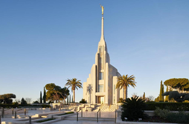

Rome Italy Temple.
The Rome Italy Temple was dedicated
in seven sessions held Sunday,
March 10, through Tuesday, March 12, 2019.
President Thomas S. Monson presided over the groundbreaking ceremony for the Rome Italy Temple on Saturday, October 23, 2010.